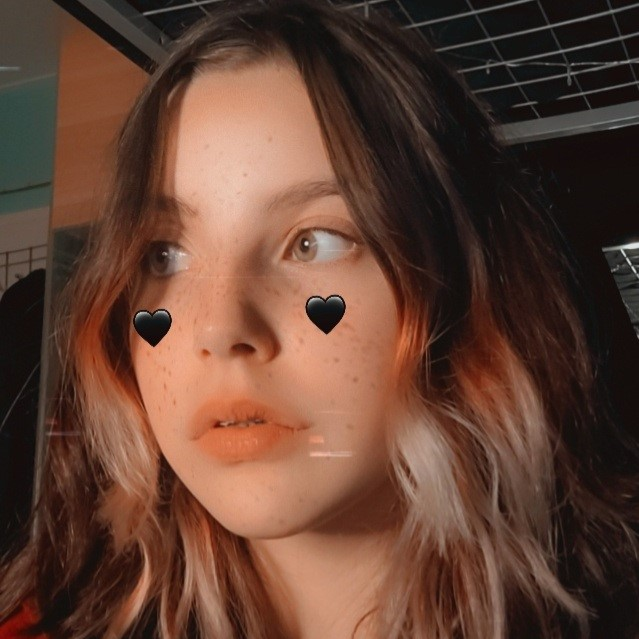
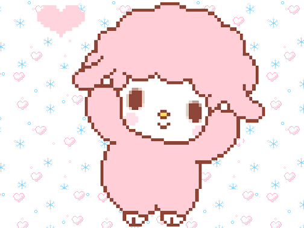
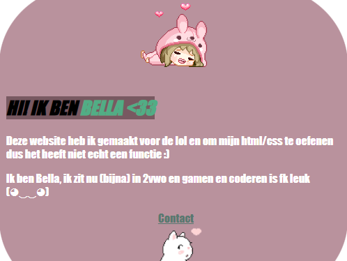
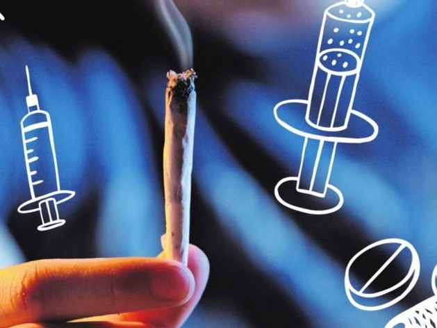

@About me!
I'm a 14 year old programming student from the Netherlands.
I love technology, and I love
making websites and learning more programming languages.
Currently, I study HTML, CSS, and Python at school. I like learning more HTML and teaching myself Javascript and
Unity in my free time.
Outside of school and technology I enjoy playing the piano and learning new languages.
I'm fluent in Dutch, English, and Portuguese. I'm also learning French and German.

@CodingCore!
CodingCore is a website I made for myself. I use a lot of websites when coding and I'm too lazy to keep typing
in all my searches, so I just made this website to be able to press buttons instead of having to type everything
out.
Coding Core includes resources such as images, pixels, gifs, HTML help (stackoverflow, HTML validator,
etc), my favourite playlists I use as background music while coding, a functional note system, and more.
Development started July 8, 2022 and is still ongoing. I've separated version 0.8 and 2.0, as I wanted to rewrite
codingcore, but keep the original version. Version 0.8 hasn't been updated since July 25, 2022. Version 2.0 was
created November 21, 2022 and is still in development.
Open codingcore v0.8 here
Open codingcore v2.0 here

@HTML Exercise!
The HTML Exercise website was made purely to learn some new things about html & css and remember the basics
since
it'd been a while since I did HTML and CSS.
I made this around June 24 2022.

@Project Safe Society!
Project Veilige Samenleving (translated to English: Project Safe Society) was a project at my school in late
March - early April of 2022. We received the assignment of showing how we could make our society safer. Me and the
two classmates I worked with chose raising awareness about drugs and alcohol being used more by minors.
I made the homepage and the "Manieren om te stoppen" ("Ways to stop") pages, and I helped my classmates with
their pages a little. This wasn't one of my greatest works but it was one of the earliest and shows how far I've
come.